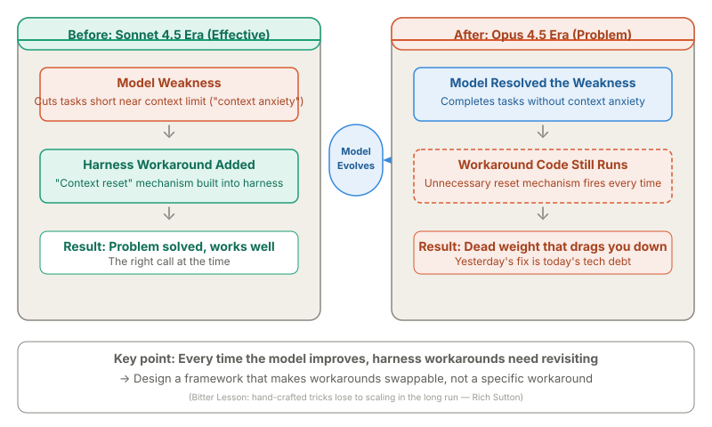
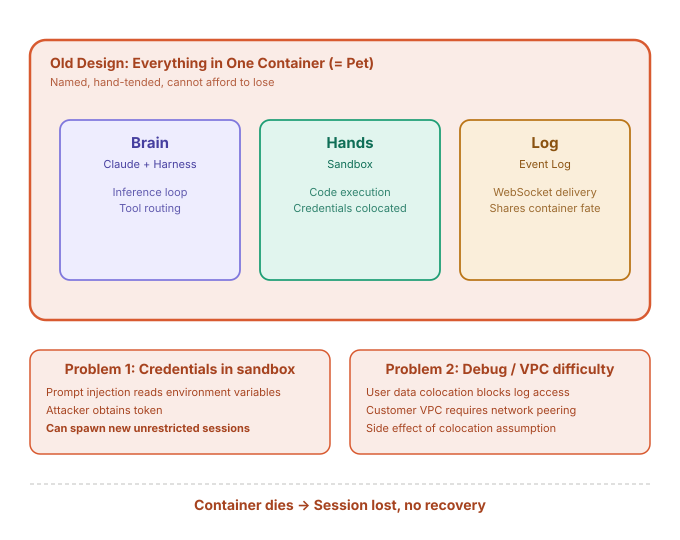
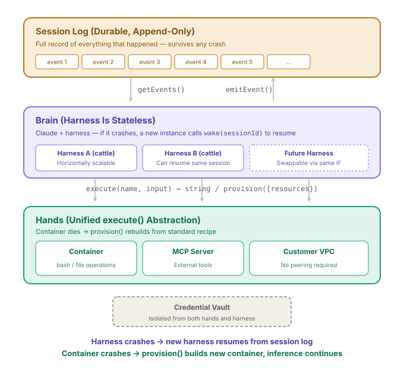
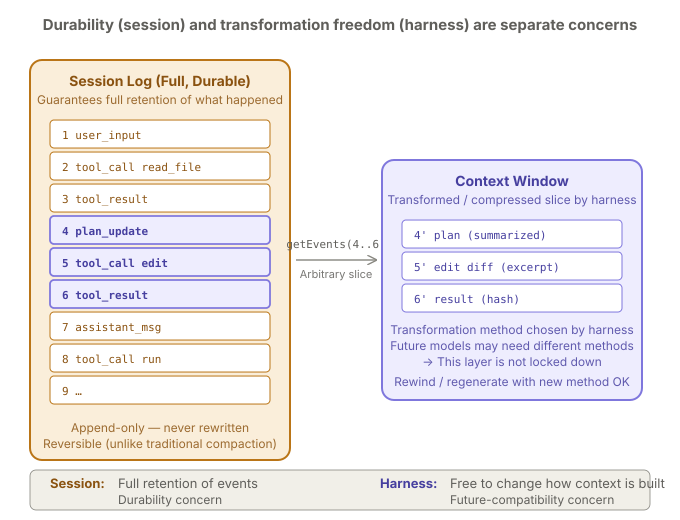
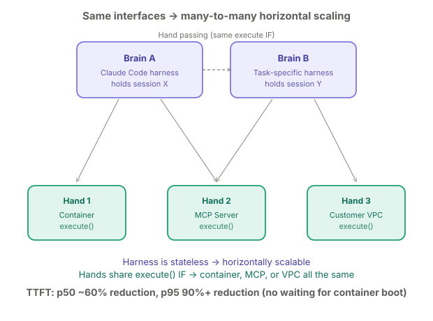
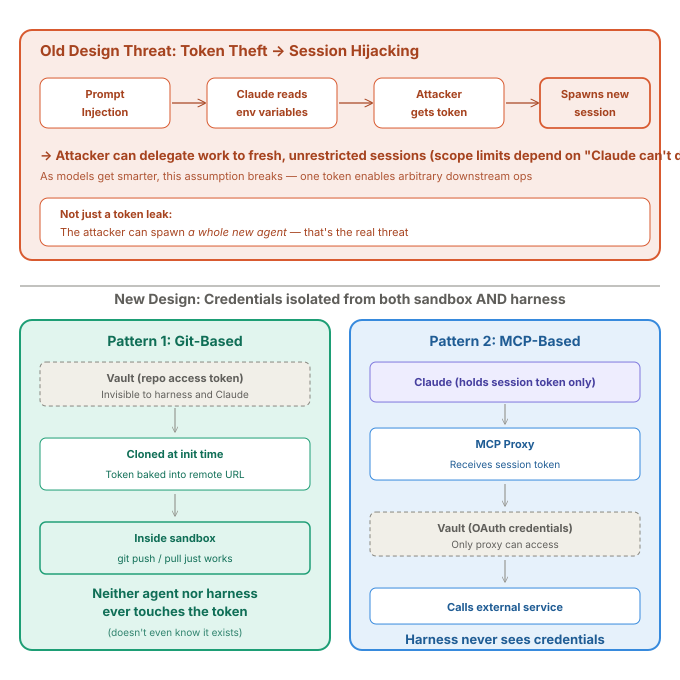
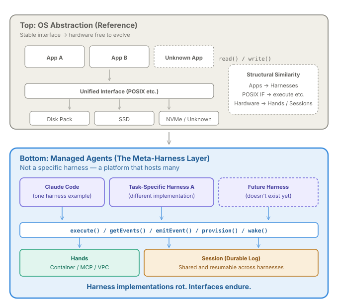

What Is Anthropic Managed Agents? Brain/Hands/Session Separation Explained¶
For / Key Points
For: Engineers designing or operating AI agent platforms / Developers improving the operation of Coding Agents like Claude Code / Readers looking for a concrete case study in harness engineering
Key Points:
- Managed Agents is not a "we decoupled and scaled" story. The real argument: harness workarounds go stale every time the model improves, so you need an interface framework that outlives any specific workaround
- Separating brain, hands, and session means any piece can crash and recover. Time to first token (TTFT) dropped roughly 60% at p50 and over 90% at p95
- Managed Agents is not a product name — it's a platform that hosts many harnesses. Claude Code and future harnesses all run on the same framework
Background: What Is a Harness?
A harness is the runtime infrastructure that drives an AI agent like Claude. Concretely, it's the loop of "call Claude → Claude wants to use a tool → route the call to the right tool → return the result to Claude." Claude Code is one example of a harness.
This article is a deep read of Anthropic's official post "Scaling Managed Agents: Decoupling the brain from the hands," published on April 8, 2026.1 That post describes the server-side API infrastructure that Anthropic operates — it is a separate system from the Claude Code that runs on your local machine.
1. When the Model Gets Smarter, Harness Workarounds Become Dead Weight¶
The official Managed Agents post1 does not start with architecture. It starts with a problem: harness workarounds have an expiration date.
Here's a concrete example. Sonnet 4.5 had a weakness: it would cut tasks short when it sensed the context limit approaching ("context anxiety"). Anthropic added a "context reset" mechanism to the harness as a fix. That was the right call at the time.
But when they ran the same harness on the newer Opus 4.5, the "context anxiety" behavior was simply gone1. The model had evolved past the weakness.
The diagram below shows this Before/After. Left: the workaround was effective. Right: it became unnecessary baggage.

The takeaway is straightforward. Harness workarounds are built on the assumption that "the current model has weakness X." But models improve. When the weakness disappears, the workaround keeps running anyway — it becomes dead weight that does nothing useful but still consumes resources and complexity.
Rich Sutton's The Bitter Lesson2 argues that hand-crafted tricks lose to scaling in the long run. The same force applies to harness design.
So what do you do? Instead of relying on specific workaround code, you design a framework (interface) that makes it easy to swap workarounds in and out. This is the core idea that runs through the entire Managed Agents design.
2. The Old Design: Everything in One Box¶
What exactly was separated? First, the old design.
When Anthropic first built Managed Agents, they put the brain (Claude plus harness), the hands (code-execution sandbox), and the event log all inside a single container1. This is the server-side API service infrastructure that Anthropic operates — different from the Claude Code that runs on your machine.
The diagram below shows this "everything in one box" structure and the three problems it caused.

This is the classic "pet" pattern in infrastructure3: a named, hand-tended individual you cannot afford to lose.
Problem 1: You can't tell which part broke. The only observability was a WebSocket event stream. When the container died, you couldn't even tell whether it was a brain failure or a sandbox failure1. And because user data lived in the same container, you couldn't inspect logs directly for privacy reasons.
Problem 2: Stolen credentials let attackers hijack the agent. Auth tokens sat inside the sandbox. A prompt injection that convinced Claude to read its environment variables would leak the token. Worse: with that token, an attacker could spawn a brand-new, unrestricted agent session and delegate work to it1.
Problem 3: Hard to connect to customer environments. Connecting Claude to a customer's VPC required network peering or running the harness on the customer's side — a side effect of the "everything in one box" assumption.
And when the container died, the session (work log) inside it was gone forever.
3. The New Design: Separate Brain, Hands, and Log¶
From "everything in one box," the new Managed Agents split into three independent components1:
| Component | Role | What happens on failure |
|---|---|---|
| Session (work log) | Append-only log of everything that happened | Persists independently. Survives any crash |
| Brain (harness) | Loop that calls Claude and routes tool calls | Crashes → a new harness calls wake(sessionId) and resumes |
| Hands (sandbox) | Code execution, MCP servers, customer VPC | Crashes → provision() builds a new environment. Inference doesn't stop |
The diagram below shows how these three layers are independent and connected through unified interfaces.

The decisive move here is that the harness itself became disposable. In infrastructure terms, a "pet" server is one you name and nurse back to health; "cattle" are servers you replace when they break. The old harness was a pet. The new one is cattle.
This works because the work log (session) lives outside the harness. When a harness dies, a new one reads the session log to see how far work progressed and picks up from there.
The hands side follows the same principle. All brain-to-hands calls go through a single interface: execute(name, input) → string. The brain doesn't need to know whether the hand is a container, an MCP server, or a customer VPC.
Credentials are isolated from both the harness and the sandbox. Details in Section 6.
4. Sessions and Context Windows Are Different Things¶
Section 3 described the session as a "work log." It's easy to confuse this with Claude's context window. They serve completely different purposes.
The diagram below shows how events accumulate in the session (left), and the harness picks out a slice and transforms it into the context window (right).

In short: the session is "a warehouse that keeps everything," and the context window is "a summary note the harness prepares for Claude right now."
| Session | Context window | |
|---|---|---|
| Purpose | Keep a full record of what happened | Give Claude only the information it needs |
| Characteristic | Append-only, never rewritten | Freely compressed and transformed by the harness |
| Lifetime | Survives harness crashes | Rebuilt for every inference call |
What Anthropic is aiming for here is to separate the "warehouse" from the "method for writing summary notes"1.
Why bother? Because the optimal way to write those summary notes for future models is unknown today. By keeping the full record in the session, you can swap out the summarization method later without losing data.
Traditional approaches compressed old information irreversibly inside the context window. With a full session log, you can rewind and re-summarize with a different strategy. That's the difference between irreversible and reversible.
5. Separation Enables Horizontal Scaling¶
Splitting the three pieces apart has a side benefit: you can freely combine multiple brains with multiple hands.
The diagram below shows brains A and B sharing hands 1–3 in a many-to-many configuration, with the ability to pass hands between brains.

Because the harness is stateless, you can run many harness instances and distribute load. Because all hands implement the unified execute() interface, any brain can use any hand. You can even hand a sandbox off from one brain to another1.
The reported results: TTFT dropped roughly 60% at p50 and over 90% at p951. The reason is simple — sessions that don't need a sandbox (no code execution) can start inference immediately without waiting for a container to spin up.
The original article puts it with humor: the harness "doesn't know whether the sandbox is a container, a phone, or a Pokémon emulator"1. If execute(name, input) → string holds, nothing else matters.
6. Structural Credential Isolation¶
Section 2 described how stolen credentials could let an attacker hijack the agent. The new design addresses this structurally.
The diagram below contrasts the old attack flow (top) with the two new isolation patterns (bottom).

The old approach relied on scoping tokens down to limit damage. But that strategy assumes "Claude isn't smart enough to do much with a limited token." As Claude gets smarter, the assumption breaks.
The new design takes a different approach: put the tokens somewhere the agent physically cannot reach1.
Git pattern: The repository access token is baked into the clone URL during sandbox initialization. git push and git pull work inside the sandbox, but neither the agent nor the harness ever sees the raw token value.
MCP pattern: Claude calls MCP tools through a proxy. The proxy receives a session token, fetches the real OAuth credentials from a vault, and calls the downstream service. Neither the harness nor Claude ever sees the actual credentials1.
The design's strength is that safety does not depend on how smart the model is. If the token is structurally unreachable, no amount of intelligence can access it.
7. Managed Agents Is a "Meta-Harness"¶
Here is the logical chain from the article so far:
- Harness workaround code becomes dead weight when the model improves (Section 1)
- So you need a framework that makes workarounds replaceable (Section 1 conclusion)
- The old design put everything in one box and couldn't replace anything (Section 2)
- The new design separates brain, hands, and log so each is disposable (Sections 3–6)
What do you call this framework? Anthropic explains it through an analogy with operating systems1.
The diagram below compares OS abstraction (top) with Managed Agents (bottom) to show their structural similarity.

In operating systems, the read() / write() interface stayed stable while the hardware underneath evolved from disk packs to SSDs to NVMe. Managed Agents aims for the same thing.
Managed Agents is a meta-harness in the same spirit, unopinionated about the specific harness that Claude will need in the future ... We're opinionated about the shape of these interfaces, not about what runs behind them.1
In other words, Managed Agents is not the name of any specific harness like Claude Code. Claude Code, task-specific harnesses, and harnesses that don't exist yet all sit on the same platform and communicate through shared interfaces: execute() / getEvents() / provision().
Eric Raymond's The Art of Unix Programming4 advises designing interfaces with "programs as yet unthought of" in mind. Managed Agents applies that exact principle to harnesses.
In the context of this harness engineering series, the first piece5 asked how to name failures that prompts can't prevent. The second6 asked what to build in practice. This article addresses: what matters most when the harness itself becomes disposable?
The answer is consistent. Individual harness implementations go stale. The interface they plug into endures.
8. Not Just a Design Philosophy — It's a Shipped Product¶
This article focused on the engineering blog's design philosophy, but Managed Agents is more than a set of ideas. On the same day, the official Claude account (@claudeai) announced it on X as a new product feature7.
The key message: deploying AI agents to production used to take months of infrastructure work. With Managed Agents, you can go from prototype to production in days. Anthropic handles all the infrastructure; you just define what the agent should do, what tools it can use, and what guardrails to apply.
Early adopters already in production include:
- Notion: Delegates tasks to Claude directly inside workspaces, with parallel task execution
- Asana: AI teammate that automatically picks up and processes tasks
- Rakuten: Deployed specialized agents for product, sales, marketing, and finance — each within a week
- Sentry: Automates root-cause analysis through to writing fix PRs
You can build and deploy from the Claude Console, Claude Code, or the new CLI. Currently available as a public beta.
The Brain / Hands / Session separation covered in this article is exactly the foundation that makes "Anthropic manages the infra, you define the harness" possible. The alignment between design philosophy and shipped product validates everything in the seven sections above.
Summary¶
Reading Managed Agents as "they decoupled and scaled" misses the causal arrow. Decoupling was the means, not the goal.
- Starting point: Harness workarounds become dead weight when models improve. Yesterday's fix becomes today's tech debt
- Decision: Don't depend on any specific workaround. Lock in the interface that lets you swap workarounds freely
- Result: Managed Agents is not the name of a harness; it's a platform (meta-harness) that hosts many
Read it this way, and every design choice — brain/hands/session separation, session vs. context window, structural credential isolation — follows from a single rule: keep the interface long-lived.
Related Articles¶
- What Is Harness Engineering: A New Concept Defining the 'Outside' of Context Engineering — Definition, background, and Claude Code integration points
- What Is Harness Engineering — What to Build in Practice — Five layers: constraints, information, verification, recovery, review
- What Is Claude Code's /buddy? The AI Pet Living in Your Terminal — A concrete product-side example of the "pet" framing discussed in this article